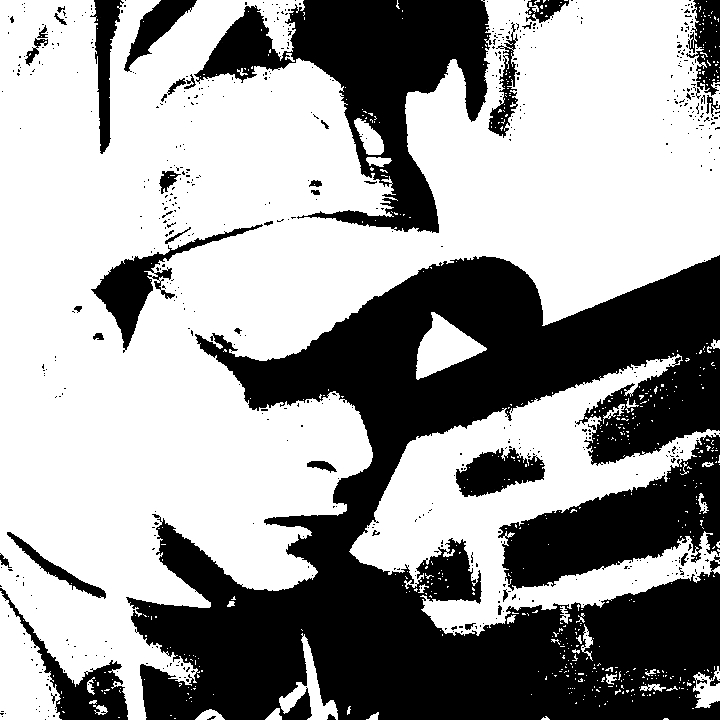
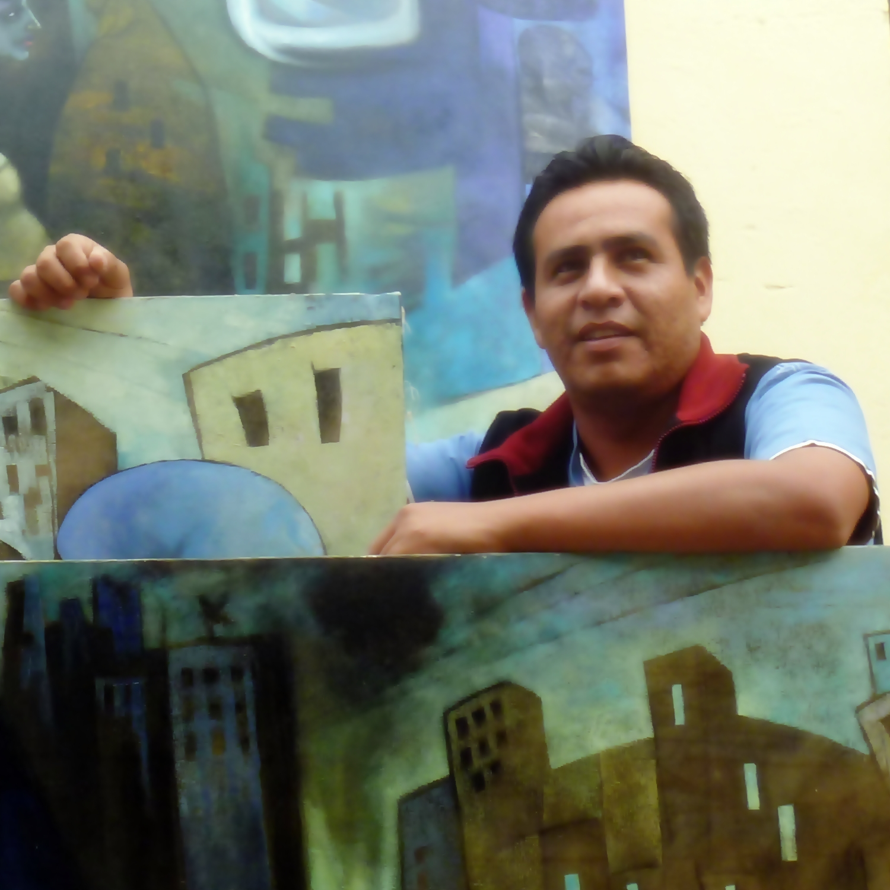

ARTE Y EVOLUCIÓN
UNDERGROUND PERÚ
RADIO ONLINE
El explorador no admite los marcos flotantes o no está configurado actualmente para mostrarlos.
L
o imperdonable no es el tiempo perdido, sino el tiempo que desde este momento te permites perder